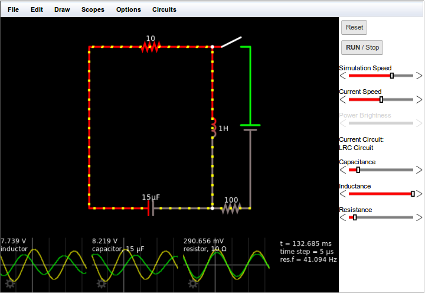
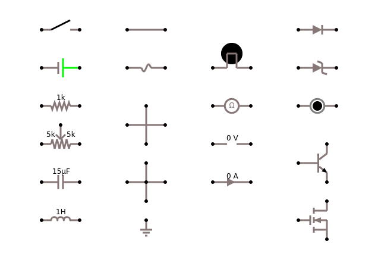

C. Simulator
We will be using the Circuit Simulator, developed by Paul Falstad [1], who graciously put this incredible project under an open source license. The Simulator can be integrated in web pages, but there is also a desktop version available.
.
Overview
Since it runs in a browser, no installation is neccessary. Using the File menu you can import and export circuit files. They are basically text files describing the circuit. Under the Circuits menu you will find quite an incredible number of example cicuits. Additional ones can be found on the website [2]. The examples from the lectures are to be found in the file "pc_003.zip" on the Google drive.
Finally, if you want to modify existing circuits or create your own from scratch, you find all available electronic components in the Draw menu. You simply select which component you want to use, and click somewhere on the diagram to place it. You can then drag it around, change its size and direction and add it to the circuit as you like. By clicking on the "Run/Stop" button you can then start the simulation.
.
 Get Started
Get Started
To get started, it is probably a good idea to start simple. For this draw a battery ('v'), then a resistor ('r'), a switch ('s') and a lamp (), and connect the with wires ('w'). If you want a real lamp, instead of an LED, you find that under the Draw menu (Outputs and Labels > Add Lamp). Now test your first circuit by turning the switch on and off.
,
Circuit Diagrams
Below are all the circuit diagrams that we will be needing:

.
Of Interest
As you will, the Circuit Simulator is pretty amazing. Towards to end of the class we will need the fact that it is possible to create and use subcircuits [3]. Also, helpful might be the fact that one can import circuits through the URL:
http://falstad.com/circuit/circuitjs.html?cct= $+1+0.000005+10.20027730826997+53+5+50%0Aw+304+64+304+128+0%0Ad+304+128+368+192+2+ default%0Ad+304+256+368+192+2+default%0Ad+240+192+304+128+2+default%0Ad+240+192+304+256+2+ default%0Aw+304+256+304+352+0%0Aw+368+192+416+192+0%0A207+304+64+304+16+4+ +in%5Cp%0A207+304+352+304+400+4++in-%0A207+416+192+480+192+4+ +out%5Cp%0A207+240+192+160+192+4++out-%0A
.
Other Simulators
There are also other online circuit simulators. Some are free some are not, some are decent, some not:
- CircuitLab, https://www.circuitlab.com/
- PartSim, https://www.partsim.com/simulator/#1000
- TOP TEN ONLINE CIRCUIT SIMULATORS, www.electronics-lab.com/top-ten-online-circuit-simulators/
.
References
[1] Circuit Simulator, http://falstad.com/circuit/
[2] Electronics Demonstrations, falstad.com/circuit-java/e-index.html
[3] How to create subcircuits: http://falstad.com/circuit/subcircuits.html
.